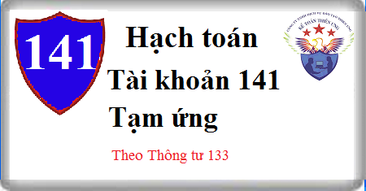

Hướng dẫn cách hạch toán Tài khoản 141 theo Thông tư 133, cách hạch toán khoản Tạm ứng mua hàng hóa, vật tư, cách hạch toán hoàn tạm ứng, kết cấu nội dung Tài khoản 141.
1. Nguyên tắc kế toán Tài khoản 141 - Tạm ứng
a) Tài khoản này dùng để phản ánh các khoản tạm ứng của doanh nghiệp cho người lao động trong doanh nghiệp và tình hình thanh toán các khoản tạm ứng đó.
b) Khoản tạm ứng là một khoản tiền hoặc vật tư do doanh nghiệp giao cho người nhận tạm ứng để thực hiện nhiệm vụ sản xuất, kinh doanh hoặc giải quyết một công việc nào đó được phê duyệt. Người nhận tạm ứng phải là người lao động làm việc tại doanh nghiệp. Đối với người nhận tạm ứng thường xuyên (thuộc các bộ phận cung ứng vật tư, quản trị, hành chính) phải được Giám đốc (Tổng giám đốc) chỉ định bằng văn bản.
c) Người nhận tạm ứng (có tư cách cá nhân hay tập thể) phải chịu trách nhiệm với doanh nghiệp về số đã nhận tạm ứng và chỉ được sử dụng tạm ứng theo đúng mục đích và nội dung công việc đã được phê duyệt. Nếu số tiền nhận tạm ứng không sử dụng hoặc không sử dụng hết phải nộp lại quỹ. Người nhận tạm ứng không được chuyển số tiền tạm ứng cho người khác sử dụng.
Khi hoàn thành, kết thúc công việc được giao, người nhận tạm ứng phải lập bảng thanh toán tạm ứng (kèm theo chứng từ gốc) để thanh toán toàn bộ, dứt điểm (theo từng lần, từng khoản) số tạm ứng đã nhận, số tạm ứng đã sử dụng và khoản chênh lệch giữa số đã nhận tạm ứng với số đã sử dụng (nếu có). Khoản tạm ứng sử dụng không hết nếu không nộp lại quỹ thì phải tính trừ vào lương của người nhận tạm ứng. Trường hợp chi quá số nhận tạm ứng thì doanh nghiệp sẽ chi bổ sung số còn thiếu.
d) Phải thanh toán dứt điểm khoản tạm ứng kỳ trước mới được nhận tạm ứng kỳ sau. Kế toán phải mở sổ kế toán chi tiết theo dõi cho từng người nhận tạm ứng và ghi chép đầy đủ tình hình nhận, thanh toán tạm ứng theo từng lần tạm ứng.
2. Kết cấu và nội dung phản Tài khoản 141 - Tạm ứng
Bên Nợ:
Các khoản tiền, vật tư đã tạm ứng cho người lao động của doanh nghiệp.
Bên Có:
- Các khoản tạm ứng đã được thanh toán;
- Số tiền tạm ứng dùng không hết nhập lại quỹ hoặc tính trừ vào lương;
- Các khoản vật tư đã tạm ứng sử dụng không hết nhập lại kho.
Số dư bên Nợ:
Số tạm ứng chưa thanh toán.
3. Cách hạch toán tạm ứng Tài khoản 141
a) Khi tạm ứng tiền hoặc vật tư cho người lao động trong doanh nghiệp, ghi:
Nợ TK 141 - Tạm ứng
Có các Tài khoản 111, 112, 152,...
b) Khi thực hiện xong công việc được giao, người nhận tạm ứng lập Bảng thanh toán tạm ứng kèm theo các chứng từ gốc đã được ký duyệt để quyết toán khoản tạm ứng, ghi:
Nợ các TK 152, 153, 156, 241, 642 ...
Nợ Tài khoản 133 Thuế GTGT được khấu trừ (nếu có)
Có TK 141 - Tạm ứng.
c) Các khoản tạm ứng chi (hoặc sử dụng) không hết, phải nhập lại quỹ, nhập lại kho hoặc trừ vào lương của người nhận tạm ứng, ghi:
Nợ TK 111 - Tiền mặt
Nợ TK 152- Nguyên vật liệu
Nợ TK 334 Phải trả người lao động
Có TK 141 - Tạm ứng.
d) Trường hợp số thực chi đã được duyệt lớn hơn số đã nhận tạm ứng, kế toán lập phiếu chi để thanh toán thêm cho người nhận tạm ứng, ghi:
Nợ các TK 152, 153,156, 241, 642,...
Có TK 111 - Tiền mặt.
--------------------------------------
- Toàn bộ chế độ kế toán theo TT 133 xem chi tiết tại đây:
